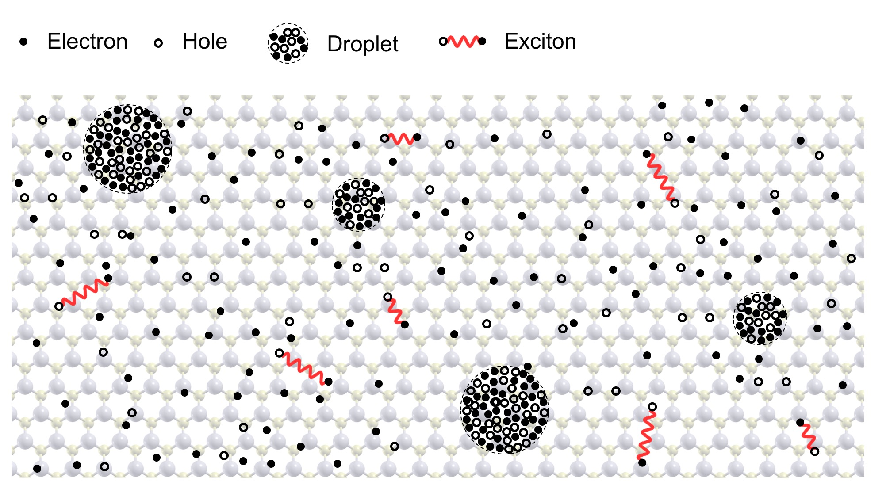

Research
Quantum-Classical Spin Hybrids:
Nitrogen Vacancy (NV) center in diamond - paramagnetic lattice defect composed of a substitutional nitrogen and an adjacent vacancy - has properties like long coherence times, microwave tunability, and optical initialization and readout. Such remarkable properties make NV centers a promising candidate for applications in quantum technology. NV center being an effective spin-1 system carries a spin magnetic moment, and thus couples to magnetic field via the Zeeman interaction. Spin-spin interactions in quantum-
classical spin hybrids are promising enablers of quantum spintronics allowing spin-orbit induced electrical driving of magnons to mitigate the challenge of coherent electrical driving of Quantum Imputiry spins. We demonstrate utilizing the electrical control of the localized magnetic excitation mode (FMR) of a nanomagnet to coherently drive an NV. [Manuscript in preperation (2019)]. The direct coupling of spin dynamics to magnetic field via the Zeeman interaction makes NV an atomic scale magnetic sensor used in measuring both static fields emanating from as well as dynamics properties of a target system. Such remarkable sensing properties of NV has been used to sense properties like temperature and voltage in a non-invasive manner.

Photoemission from excitons:
Excitons can be resonantly and non-resonantly excited in non-equilibrium. With improvements in the resolution of ARPES measurements and with the emergence of systems hosting tightly bound excitons, we can expect their signatures in single particle photoemission spectra. This work focusses on the dependencies of the signature in term of its location in energy and momenta as well as its depedence on the exciton envelope wavefunction. This study uses tools of many body physics to find the probability of photoemission of a bound electron in an exciton state. [Phys. Rev. B 97, 235310 (2018)]. Such developments have resulted in posibilities of creating coherent exciton states and with narrower time-domain pump pulse, it is further expected to observe coherent exciton quantum beats [Phys. Rev. B 99, 125303 (2019)].
- 
Electron-Hole Liquid in quasi-2D systems:
Research highlighted at [ news on phys.org ].
Non-equilibrium phase transitions can occur in systems driven out of equilibrium by external perturbing fields through strong correlations. Electron-Hole Liquid (EHL) is one such strongly correlated, condensed phase of electron-hole pairs observed in semiconductors driven out of equilibrium by optical pumping at high electron-hole pair densities and cryogenic temperatures. The transition of high density of photoexcited excitons/electron-hole pairs into EHL is governed by a complex interplay between thermal/Mott dissociation and strong correlations, resulting in a rich phase diagram for the non-equilibrium photoexcited system. With the emergence of monolayer transition metal dichalcogenides (TMDs) characterized by quantum confinement and weaker dielectric screening, it has become possible to observe this truly non-equilibrium EHL phase at and above room temperature [Nano Letters 2018 18 (1), 455-459].
Transport Properties of Semiconductors:
Studied non-equilibrium velocity fluctuations in graphene (Hot-electron noise) using the Boltzmann Green function formalism. Inelastic scattering happens predominately in the electric field direction and does not bring about velocity fluctuations. However, the presence of elastic scattering causes velocity fluctuations. The interplay of these two scattering mechanisms is treated within the relaxation time approximation. The low frequency hot-electron noise decreases with increasing electric field strength since fluctutaion in k-states do not lead to velocity fluctuations due to the linear low-energy Dirac dispersion in graphene [Phys. Rev. B 90, 245424 (2014)].
Magneto-Optical Properties of Semiconductors:
Studied the circular polarization and chemical potential dependence of cyclotron resonance absorption between Landau quantized levels in graphene. Interesting Landau level properties exist in graphene due to the exotic linear Dirac dispersion. These include non-equidistant energy eigenvalues with a √B dependence on magnetic field and a zero energy Landaul level. The presence of a zero energy Landau level allows for simultaneous electron-active and hole-active cyclotron resonances if the chemical potential lies within the broadened zero-energy Landau level. CVD grown graphene had a strong unintentional p-doping and the chemical potential was within the Valence band giving only hole-active resonance. However, upon annealing the p-doping of the sample was reduced bringing the chemical potential close to the zero Landau level, making it possible to observe both electron-active and hole-active resonances [Phys. Rev. B 85, 205407 (2012)].
Ultrafast Coherent Dynamics in Semiconductors:
Studied coherent plasmon-phonon dynamics in bulk Gallium Phosphide (GaP) and Gallium Phosphide film on Silicon (Si) substrate aimed towards understanding interaction between non-equilibrium plasma and lattice vibrations for opto-electronic device applications. Ultrafast optical excitation of charge carriers in a polar semiconductor can generate coherent coupled plasmon-phonon modes whose strength depends on the magnitude of the internal electric fields. Impurity states in the energy gap leads to Fermi level pinning and band bending and results in a surface electric field decreasing linearly into the sample. In intrinsic systems, this field strength introduces lattice displacement of the polar semiconductor. Upon photoexcitation, the generated carriers couple to the lattice degree of freedom and screen the electric field thereafter relaxing the lattice. The dynamics of the coupled plasmon-phonon modes brings
about changes in optical properties of the material which can be measured via a variety of
techniques including the linear electro-optic (Pockels) effect. Experiments on both intrinsic and extrinsic semiconductor samples indicate qualitatively the same behavior. Smaller photoexcited carrier density measurements show oscillations only at the LO (Longitudinal Optical) mode. Increasing the photoexcited carrier density shows oscillations at the phonon LOPC (Longitudinal Optical Plasmon Coupled) mode i.e. TO frequency, alongside the LO mode. We theoretically modeled the ultrafast excitation of coupled plasmon-phonon modes by a set of coupled differential equations in terms of the electronic polarization and the lattice displacement. The large absorption depth in GaP ensures that the effects of diffusion on the coupled modes are insignificant. Our results show that in order to obtain
agreement with experiment, it is necessary to average over the inhomogeneous density distribution (high carrier density at the center and low carrier density in the wings) over the pump spot size [Phys. Rev. B 92, 205203 (2015)]. The amplitude of differential reflectivity measurements can give a crude measure of the interface Fermi level and interface electric field stregth in case on GaP thin films on Si substrate [Appl. Phys. Lett. 108, 051607 (2016)].
Mechanisms for generation of Terahertz Radiation:
Studied the contribution of accelerating photoexcited carriers in graphene in presence of an external electric field towards Terahertz generation. Graphene, having a Dirac dispersion implies constant magnitude of velocity of carriers. Thus naively one would expect no acceleration and hence no radiation. However, the direction of the velocity of charge carriers can change in presence of a DC electric field which can cause charges to accelerate and accelerating charges radiate. The sub-picosecond cooling time scale of charge carrier distribution allows for the radiation to have spectral weight in the Terahertz frequency range [Phys. Rev. B 94, 195207 (2016) ].